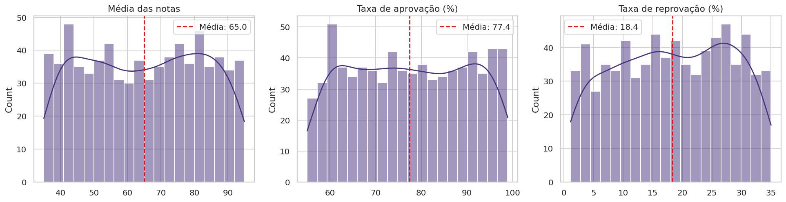
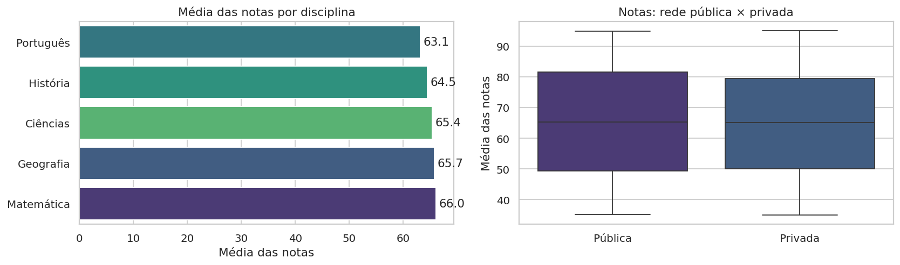
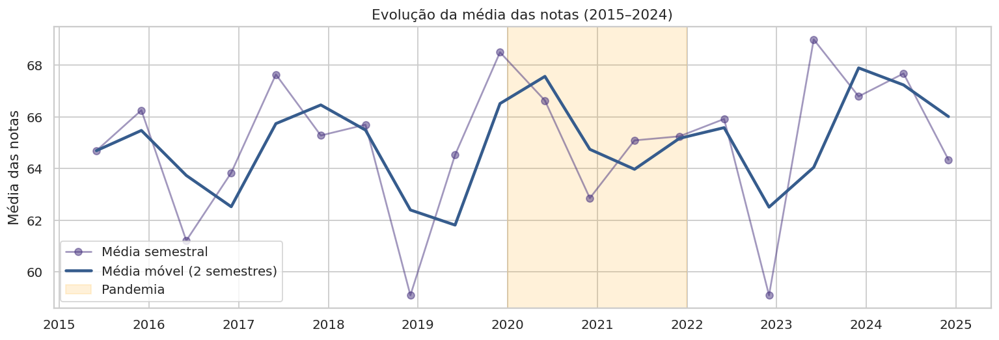
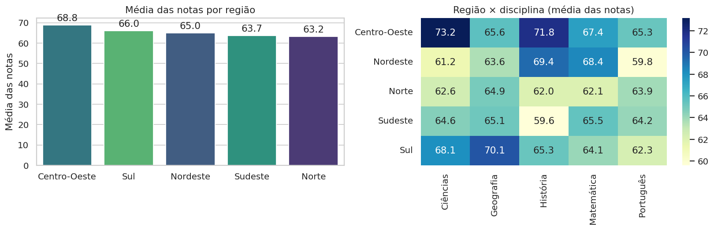
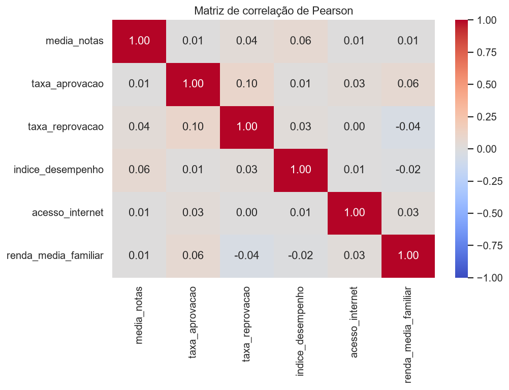

1. Problema
Como o desempenho escolar varia entre regiões, redes de ensino (pública × privada), disciplinas e ao longo do tempo? Renda familiar e acesso à internet estão associados às notas? E a base de dados é confiável?
⚠️ A base é uma simulação. Os resultados servem para praticar análise de dados e não representam estatísticas oficiais da educação brasileira.
2. Base de dados
Variáveis: região, UF, município, rede de ensino, disciplina, média das notas, taxas de aprovação e reprovação, acesso à internet, renda média familiar, índice e nível de desempenho.
3. Tratamento e engenharia de atributos
- Sem valores nulos ou duplicados; tipos convertidos (datas, categorias).
- 39,3% dos registros (291) têm aprovação + reprovação acima de 100% → sinalizados em
taxas_inconsistentes(o dashboard permite excluí-los). - O
nivel_desempenhooriginal não acompanha o índice → criadonivel_calculadopor quartis. - Novos atributos: período, flag de pandemia (2020–2021), faixas de renda e de internet, coordenadas dos municípios.
4. KPIs
5. Principais gráficos





6. Dashboard interativo (Streamlit)
- Filtros múltiplos: região, UF, rede, disciplina, período e exclusão de taxas inconsistentes.
- KPIs dinâmicos com comparação contra a base completa.
- Análise temporal com média móvel ajustável e destaque da pandemia.
- Mapa interativo (Plotly) dos municípios e correlação estatística (Pearson + p-valor + regressão).
- Banco de dados relacional SQLite com SQLAlchemy (municípios 1—N desempenho).
7. Conclusão
O desempenho médio é de 65 pontos, com diferenças pequenas entre disciplinas, redes e regiões e nenhuma relação estatística relevante entre renda, internet e notas (r ≈ 0,01). Não há tendência temporal nem efeito da pandemia.
Esses padrões refletem a natureza simulada da base. Com dados reais (INEP, IDEB, SAEB), espera-se associação positiva entre renda, conectividade e desempenho.
8. Tecnologias
PythonPandasNumPyMatplotlibSeabornPlotlySciPySQLAlchemy + SQLiteStreamlitGitHub / GitHub Pagespip install -r requirements.txt streamlit run app.py